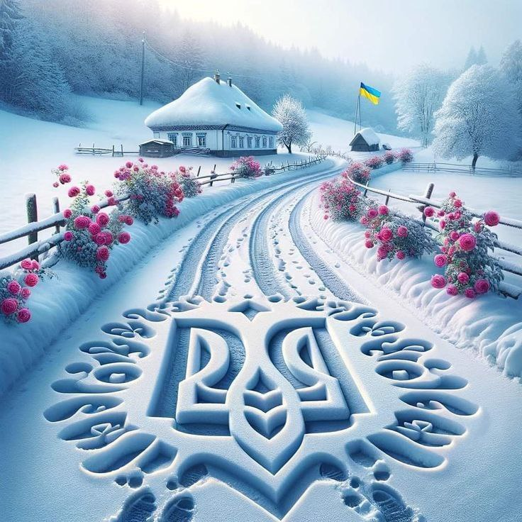
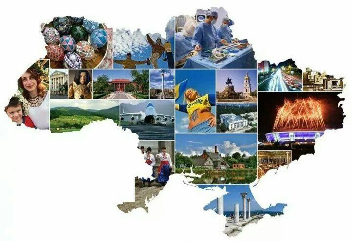
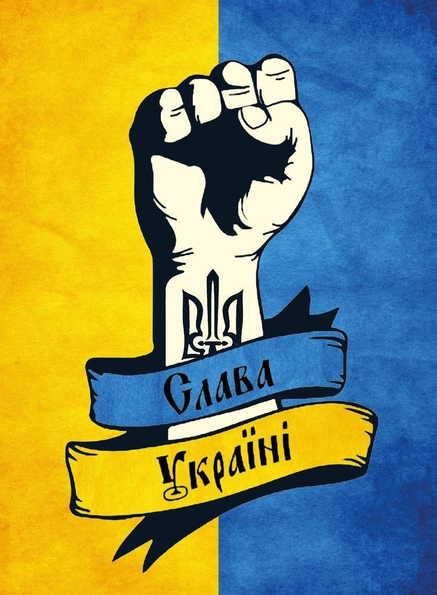

Про Україну
Україна - країна з багатою історією, культурним різноманіттям і прекрасними пейзажами. Розташована в центрі Східної Європи, вона має велике значення як політичний, економічний і культурний центр. Україна відома своєю гостинністю, традиційною кухнею, а також різноманітними національними святами та обрядами. Крім того, країна має багатий природний ресурсний потенціал, зокрема чорноземи, мінеральні ресурси та обширні лісові масиви. Україна є важливим гравцем на міжнародній арені та активно працює над зміцненням своєї демократії та розвитком своєї економіки.
Про Історію
Історія України налічує тисячоліття подій, що відображають багатство культур, династій та важливих історичних моментів. Зародження української нації пов'язують з давніми слов'янськими племенами, які заселяли ці території від давнини. У середньовіччі Україна була розділена між різними державами, такими як Київська Русь, Литовсько-Руська держава, Реч Посполита, а пізніше була під владою Російської імперії.
Важливими етапами в історії України є період Гетьманщини (17-18 ст.), козацькі війни за волю та незалежність, а також національно-визвольні змагання 19-20 століть. Після першої світової війни Україна стала ареною боротьби за незалежність, що призвело до утворення Української Народної Республіки та подальшого включення до складу СРСР.
У другій половині 20 століття Україна стала центром національного відродження та боротьби за незалежність, яка призвела до розпаду Радянського Союзу і проголошення незалежності в 1991 році. Після цього країна пройшла складний шлях становлення як суверенної держави з власною економікою, політичною системою та місцем на міжнародній арені.
Про Українців
Українці - це народ з багатою культурою, традиціями та історією. Вони відомі своєю гостинністю, теплим ставленням до гостей та великою патріотичною душею. Українська культура включає в себе народні обряди, танці, пісні, різноманітні ремесла та кулінарні традиції.
Українці мають багату мовну спадщину - українська мова є державною мовою країни, а також вони володіють декількома регіональними мовами. Український народ відзначає різноманітні свята та обряди, такі як Великдень, Купала, День Незалежності та інші, що відображають їхні традиції, віру та цінності.
Українці також відомі своїми досягненнями у різних галузях, включаючи літературу, мистецтво, науку та спорт. Вони активно беруть участь у суспільному житті країни та сприяють її розвитку і процвітанню.
